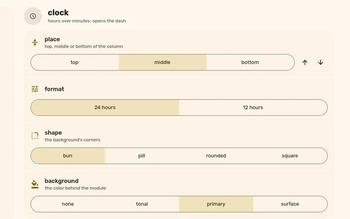

octopus
a cozy m3 shell for niri. a minimal vertical bar on waybar, and everything bigger in a companion written in rust + gtk4.
what's inside
opaque, tonal surfaces. colors from the wallpaper. light enough to idle around 45 mb.

control center
wi-fi, bluetooth, sound, brightness, media and notifications, in one place.

dash
clock, calendar, weather, the music with its lyrics, and a wallpaper picker.

spotlight
apps and their actions, a calculator, files behind /, power behind >.

lock screen
m3 shapes that turn and change at every key, the lyric being sung, the weather.

dock
pinned and open apps, with magnification. fixed, autohide or smart.

settings
bar style and position, widgets, dock, language, light, dark or automatic.
it wears your wallpaper
pick a wallpaper and matugen repaints everything: the bar, the panels, rofi, fuzzel and the rest of your system. light, dark, or whatever the picture asks for.
how the colors workinstall
on arch (or anything with these packages), the repo lives in ~/.config/octopus itself.
git clone https://github.com/pxotitas/octopus ~/.config/octopus
~/.config/octopus/install.shthen, at the end of ~/.config/niri/config.kdl:
include "~/.config/octopus/niri.kdl"dependencies
pam waybar matugen matuwall awww cliphist wl-clipboard wtype playerctl cava brightnessctl networkmanager bluez-utils libpulse python unicode-emoji unicode-cldr fd gcc rofi gtk3 gtk4 gtk4-layer-shell ttf-material-symbols-variable rust
next: the shortcuts and what you can change.